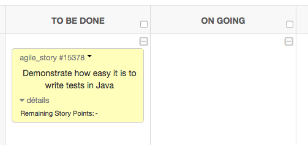
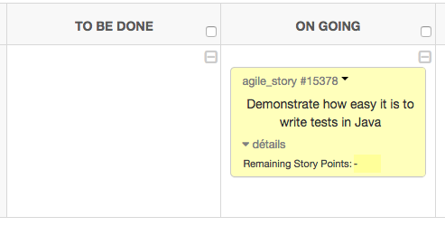

1. Pourquoi tester ?
A majority of the production failures (77%) can be reproduced by a unit test.
| Pour lire l’article en question : https://blog.acolyer.org/2016/10/06/simple-testing-can-prevent-most-critical-failures/amp/ |
1.1. Pour livrer le bon produit
1.2. Ce qui marche pour 1 ne marche pas nécessairement pour 100
1.3. La loi de Murphy
Tout ce qui est susceptible de mal tourner tournera nécessairement mal.
1.4. Différents OS ou différents terminaux
1.5. Pour donner le meilleur
2. Un exemple concret de test obligatoire
-
Fork the repository.
-
Run
bundleto install development dependencies. -
Create a topic branch
-
Add tests for your unimplemented feature or bug fix. (See [writing-and-executing-tests])
-
Run
bundle exec raketo run the tests. If your tests pass, return to step 4. -
Implement your feature or bug fix.
-
Run
bundle exec raketo run the tests. If your tests fail, return to step 6. -
Add documentation for your feature or bug fix.
-
If your changes are not 100% documented, go back to step 8.
-
Add, commit, and push your changes.
-
Submit a pull request.
3. Un exemple concret de documentation obligatoire

[…] an Eclipse project is providing extensible frameworks and applications accessible via documented APIs.
4. Typologie des tests
Vérification |
Validation |
Le produit est-il bon ? |
Le produit est-il le bon ? |
Are you building it right? |
Are you building the right thing? |
Réalisée par le développeur |
Réalisée par le testeur |
En premier |
Après la vérification |
5. JUnit etc.
5.1. Quoi tester ?
Les exceptions |
|
Le temps d’exécution |
|
Uniquement certains environnement |
|
S’exécute avant les autres tests (e.g., accès à une base) |
|
5.2. Assertions
|
On force le test à échouer |
|
La condition est vraie |
|
La condition est fausse |
|
Les deux valeurs sont égales |
|
Objet nul |
|
Objets identiques (même réf.) |
5.3. Stratégie de tests
Considérons une fonction int add(int,int); d’une classe myClass.
Définir le comportement normal de la fonction (sortie normale pour des paramètres corrects).
//for normal addition
@Test
public void testAdd1Plus1() {
int x = 1 ; int y = 1;
assertEquals(2, myClass.add(x,y));
}Ajouter des tests pour les cas particuliers :
-
aucune exception non capturée en cas d'overflow
-
les paramètres
nullsont gérés, e.g., :
//if you are using 0 as default for null, make sure your class works in that case.
@Test
public void testAdd1Plus1() {
int y = 1;
assertEquals(0, myClass.add(null,y));
}-
ça marche avec les paramètres négatifs, etc.
5.4. L’ordre des tests
Surtout aucun!!
JUnit assumes that all test methods can be executed in an arbitrary order. Well-written test code should not assume any order, i.e., tests should not depend on other tests.
5.5. Sous Eclipse
-
Pour une classe existante : Right-click (dans le
Package Exploreret ). -
Utiliser le
JUnit wizards(). -
Il n’y a plus qu’à faire .
Pensez à utiliser le plug-in infinitest.
5.6. Et pour les interfaces graphiques?
Exemple de la librairie Robot :
Robot bot = new Robot();
bot.mouseMove(10,10);
bot.mousePress(InputEvent.BUTTON1_MASK);
//add time between press and release or the input event system may
//not think it is a click
try{Thread.sleep(250);}catch(InterruptedException e){}
bot.mouseRelease(InputEvent.BUTTON1_MASK);6. Application concrète pour MPA2016
6.1. De To Be Done à On going
 |
 |
6.2. Créer une branche spécifique (si nouvelle feature)
bruel (master) $ git checkout -b US-15378
Switched to a new branch 'US-15378'
bruel (US-15378) $6.3. Ecrire un test qui échoue
6.3.1. Etape 0 : Bien comprendre ce qu’on doit faire
Objectif de la tâche : créer une classe Pile.
|
Rappels sur les propriétés d’une
Pile (opérations)
CréerPile : -> Pile estVide : Pile -> Booléen Empiler : Pile * Elément -> Pile Dépiler : Pile -> Pile Sommet : Pile -> Elément |
|
Rappels sur les propriétés d’une
Pile (préconditions)
Sommet(p) valide Si et Seulement Si estVide(p) == FAUX Dépiler(p) valide Si et Seulement Si estVide(p) == FAUX |
|
Rappels sur les propriétés d’une
Pile (axiomes)
(1) estVide(CréerPile()) (2) estVide(Empiler(p,e)) == FAUX (3) estVide(Dépiler(Empiler(p,e))) Si et Seulement Si estVide(p) (4) Sommet(Empiler(p,e)) == e (5) !estVide(p) => Sommet(Dépiler(Empiler(p,e))) == Sommet(p) L’axiome suivant résume à lui seul les axiomes (3) et (5) : Dépiler(Empiler(p,e)) == p |
6.3.2. Etape 1 : Ecrire un test simple
import junit.textui.TestRunner;
import junit.framework.TestSuite;
import junit.framework.TestCase;
public class PileTest extends TestCase {
public void test_type_new_Pile() throws Exception {
Pile pile = new Pile() ;
assertEquals("new Pile() retourne une Pile", "Pile", pile.getClass().getName());
}
}6.3.3. Etape 1' : amériorer avec un main
Pour ceux qui veulent vraiment un main :
public class PileTest extends TestCase {
static int totalAssertions = 0;
static int bilanAssertions = 0;
public void test_type_new_Pile() throws Exception {
Pile pile = new Pile() ;
totalAssertions++ ;
assertEquals("new Pile() retourne une Pile", "Pile", pile.getClass().getName());
bilanAssertions++ ;
}
public static void main(String[] args) {
junit.textui.TestRunner.run(new TestSuite(PileTest.class));
if (bilanAssertions == totalAssertions) { System.out.print("Bravo !"); }
System.out.println(" "+bilanAssertions+"/"+totalAssertions+" assertions vérifiées");
} // fin main
} // fin PileTest|
Si vous utilisez SciTE au lieu de Eclipse, pour compiler le programme de Test n’oubliez pas de placer les fichiers
javac -cp .;junit.jar PileTest.java |
6.3.4. Etape 2 : écrire un test qui passe
public void test_type_empiler() throws Exception {
Pile pile = new Pile() ;
assertEquals("empiler(pile,'XXX') retourne une Pile", "Pile", pile.empiler("XXX").getClass().getName());
}public class Pile {
public Object empiler(String string) {
// TODO Auto-generated method stub
return this;
}
}
La méthode générée par défaut retourne null ce qui provoque une NullPointerException. Nous avons modifié la méthode en conséquence.
|
6.3.5. Etape 2 : écrire un test qui échoue
public void test_axiome1() {
Pile pile = new Pile() ;
assertTrue("Une nouvelle pile est vide", pile.estVide(pile));
}public boolean estVide(Pile pile) {
// TODO Auto-generated method stub
return false;
}|
Junit n’exécute que les fonctions qui commencent pas Plus récemment, on utilise l’annotation |
6.3.6. Etape 3 : On fait passer le test
public boolean estVide(Pile pile) {
// Smartly modified by JMB to pass the test!
return true;
}|
Bien sûr le code n’est pas correcte pour l’instant (on s’en rendra compte dès les tests suivants)! Une meilleure solution pourrait être : |
6.4. Essai de merge pour voir si tout le reste marche encore
bruel (US-15378) $ git commit -am "Adding push feature. Tests OK"
[US-15378 78f3242] Adding push feature. Tests OK
1 file changed, 2 insertions(+), 3 deletions(-)
bruel (US-15378) $ git checkout devs
Switched to branch 'devs'
bruel (devs) $ git merge US-153786.5. Commit & Push dans devs
bruel (devs) $ git commit -am "..."
...
bruel (devs) $ git push origin devs
...
bruel (devs) $ git branch -D US-15378
Deleted branch US-15378 (was f392a73).